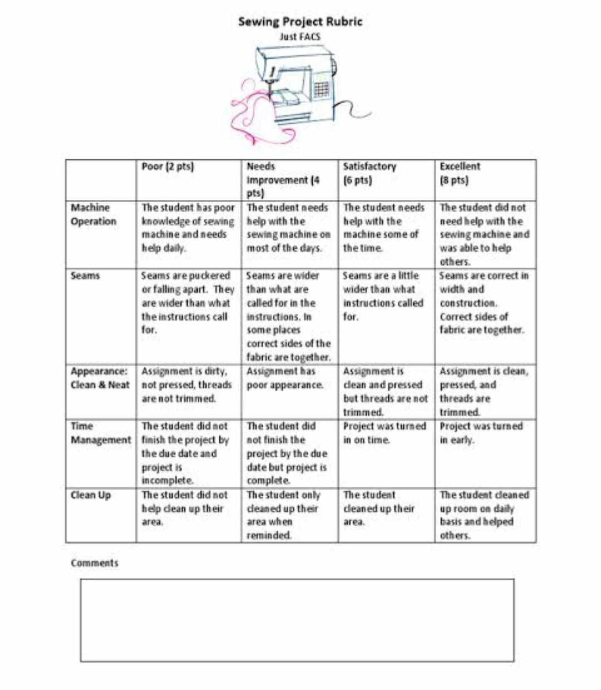

INTRODUCTION
This portfolio serves as a comprehensive narrative of my educational journey in PC 326 during the 2023-2024 academic year. It is more than just a compilation of end results; it encapsulates the process of learning, growth, and transformation I underwent throughout the course. Featuring standout projects, thoughtful reflections on obstacles and achievements, and before-and-after snapshots of my work, this portfolio vividly illustrates the considerable progress and insights I gained. It stands as a testament to my commitment, resilience, and the invaluable skills I developed during this academic period.
ABOUT
I always eager to learn and explore new horizons.
Name:
Marie Cris Rin Imperial
Age:
21
Sex:
Female
Birthdate:
April 29,2003
Nationality:
Filipino
Civil Status:
Single
Religion:
Roman Catholic
Desired Learning Outcomes
-
CHAPTER 1
-
Lesson 1:
- Explain the alternative assessment and related concepts
- Demonstrate an understanding of the different principles in assessing learning using alternative methods of assessment.
-
Lesson 2:
- Formulate learning targets that can be assessed through performance and product-oriented assessment.
- Create an assessment plan using alternative methods of assessment.
-
Lesson 3:
- Design appropriate performance assessment tools for intended student learning outcomes.
-
Lesson 4:
- Develop an assessment tool to measure affective outcomes of learning.
-
Lesson 5:
- Develop a plan in assessing students' learning using portfolio assessment.
-
Lesson 6:
- Develop appropriate rubrics to assess students' performance and outputs.
- Use rubrics to assess students' performance and output.
LEARNING ENTRIES
These are the lessons that we studied
LESSON 1
LEARNING ENTRIES
Traditional assessments rely on standardized tests for quantifiable achievements, while alternative assessments encompass diverse formats like portfolios and presentations. The choice between the two depends on educational objectives, with a balanced integration often proving most effective in catering to diverse learning needs.
LESSON 2
LEARNING ENTRIES
Traditional assessments rely on standardized tests for quantifiable achievements, while alternative assessments encompass diverse formats like portfolios and presentations. The choice between the two depends on educational objectives, with a balanced integration often proving most effective in catering to diverse learning needs.
LESSON 3
LEARNING ENTRIES
Performance assessment involves students demonstrating their knowledge and skills through practical applications, while traditional tests typically assess knowledge through standardized questions and answers. Performance assessment focuses on real-world application, promoting critical thinking and problem-solving skills, whereas traditional tests often prioritize rote memorization and recall.
LESSON 4
LEARNING ENTRIES
Affective assessment measures students' attitudes, values, beliefs, and emotions towards learning, providing insights into their motivation and engagement levels. It aims to evaluate the emotional and social aspects of learning, helping educators understand and support students' holistic development
LESSON 5
LEARNING ENTRIES
Portfolio assessment is a comprehensive method that allows students to showcase their progress, skills, and achievements through a collection of their work samples, reflections, and self-assessments.
LESSON 6
LEARNING ENTRIES
Rubrics help me as a student by providing clear criteria and expectations for assignments, guiding my work towards meeting specific learning objectives and standards
portfolio assessment rubric
and transmutation of scores

SUMMARY AND CONCLUSIONS
Assessment Learning 2 transformed your approach to measuring student progress. It delved into alternative assessments like portfolios and projects, understanding their power in revealing real-world applications of knowledge.
Portfolio assessment has reshaped my perspective on student learning, shifting from mere tests to a rich tapestry that captures the essence of the learning journey. By assembling a collection of my work, I witnessed the evolution of my skills, triumphs over challenges, and moments of growth. Reflecting on each piece not only highlighted my strengths and areas for enhancement but also offered profound insights into my learning journey, guiding me towards future progress and development.